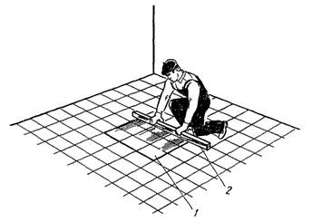

-

8(0152)31-25-61
-

kst@ggkst.by
-

http://ggkst.by
8(0152)31-25-61
kst@ggkst.by
http://ggkst.by
Карта 1: Ремонт плиточных покрытий полов
Состав технологических операций. Проверка состояния пола, определение участков, подлежащих ремонту; заделка несквозных трещин и щелей в плитках;
удаление дефектных и отслоившихся плиток; очистка и выравнивание основания ремонтируемого участка пола; замена отдельных поврежденных плиток; ремонт большой
площади покрытия.
Механизмы, инструменты, приспособления, инвентарь. Молоток электрический с двойной изоляцией; подметальная вакуумная машина; пылесос.
Скарпель или слесарное зубило; молоток; стальная щетка; лейка; ведро; кирочка; молоточек плиточника; плиточная лопатка; растворная лопата;
металлический угольник; строительный уровень; измерительная рулетка; складной метр; стальные штыри; деревянный полутерок длиной 300…800 мм;
ковш для отделочных работ; кисть-макловица; шпатель со сменными полотнами; тележка со сменной тарой для раствора; тележка с контейнером для плиток и баком для
воды. Водонепроницаемые наколенники; резиновые перчатки или напальчники; защитные очки.
Материалы. Керамические плитки для полов (ГОСТ 6787-80). Цементнопесчаиый раствор марки не ниже 150 подвижностью 4…6 см. Портландцемент М400 и
мелкий песок для приготовления пластичного раствора или цементного молока для заполнения швов между плитками. Мастики КН-2, КН-3 и др. Цветные
мелки, 3...5 %-ный раствор соляной кислоты.
Схема организации рабочего места. Ремонт плиточных покрытий зависит от особенностей и объема ремонтных работ. Участки, подлежащие ремонту, должны
быть освобождены от посторонних предметов, мешающих выполнению работ, очищены от мусора и грязи. К месту работ доставляют необходимые материалы, механизмы,
инструменты и приспособления.
Последовательность выполнения технологических операций. Проверка состояния пола, определение участков, подлежащих ремонту. Тщательным осмотром
выявляют наличие трещин, выбоин в плитках. Ручкой плиточной лопатки простукивают каждую плитку. По глухому звуку определяют прочность сцепления плиток с
основанием, выявленные дефекты отмечают цветными мелками.
Заделка несквозных трещин в плитках. В образовавшейся несквозной трещине аккуратно прочищают хорошо заточенным скарпелем края углубления для лучшего удержания
раствора при заделке. Углубление очищают от пыли, смачивают водой. Цементный раствор с добавкой соответствующего красителя вмазывают в щель отрезовкой и
уплотняют заподлицо с поверхностью плиток. Отремонтированные участки покрытия засыпают влажными опилками и ограждают.
Удаление дефектных и отслоившихся плиток. Дефектные плитки осторожно вырубают легкими ударами молотка по зубилу, удерживаемому в левой руке (рис. 1, а), а
отслоившиеся плитки, поддевая отрезовкой, снимают так, чтобы, сохранить для повторного использования. Тыльную сторону снятых целых плиток очищают от остатков
раствора кирочкой или молоточком плиточника так, чтобы не повредить кромок (рис. 1, б).
Очистка и выравнивание основания ремонтируемого участка пола. С основания удаляют остатки растворной прослойки, срубая ее зубилом (рис. 1, в). При необходимости
делают насечку основания глубиной 3…5 мм через 30...50 мм. После этого основание тщательно очищают стальным шпателем и стальной щеткой (рис. 1, г) и промывают
водой. На подготовленное основание на слой раствора укладывают плитку.
Замена отдельных поврежденных плиток. Для сохранения граней целых плиток, соприкасающихся с поврежденными, последние удаляют отдельными частями. Острие зубила
(скарпеля) ставят под тыльную сторону удаляемой плитки и ударяют по зубилу молотком. По мере очистки гнезда зубило передвигают от середины удаляемой плитки к
краям. После удаления плитки основание очищают от остатков раствора и при необходимости делают насечку. Обеспыленное, увлажненное основание заполняют
цементно-песчаным раствором и разравнивают его плиточной лопаткой. Поверхность раствора должна находиться на уровне нижней плоскости целых плиток. Затем
укладывают пластичный раствор состава 1:1 (цемент: песок) слоем толщиной до 3 мм или припорашивают сухим цементом, после чего увлажненную плитку утапливают в
раствор до уровня смежных плиток покрытия. Если плитка окажется не заподлицо с неремонтируемой поверхностью пола, ее вынимают и по мере необходимости убавляют
или добавляют раствор. Свежеуложенные плитки покрывают щитком. При замене плиток новые подбирают по цвету, оттенкам и размеру в соответствии со старым покрытием.
Рис. 1. Ремонт покрытия пола: а - вырубка дефектной плитки, б - очистка плитки от раствора, в - вырубка остатков растворной прослойки, г - очистка основания стальной щеткой
Рис. 2. Осаживание и выравнивание плиток на отремонтированном участке: 1 - отремонтированный участок покрытия, 2 - правило
Ремонт большой площади покрытия. Основание подготавливают так, как было описано выше. В углах и в середине ремонтируемого участка пола укладывают на раствор
маячные плитки на уровне сохранившегося покрытия, располагая их в углах с отступом от стены на ширину фриза, а в середине на расстоянии не более 2 м
(длина правила) от старого покрытия. Правильность укладки маячных плиток проверяют двухметровой контрольной рейкой с уровнем. Между маячными плитками по шнуру
и уровню укладывают плитки маячных рядов по периметру ремонтируемого участка и плитки промежуточных рядов - в середине ремонтируемого участка.
На подготовленное основание укладывают слой пластичного раствора состава 1 : 1 (цемент : песок) толщиной 3...5 мм, заглаживают его лопаткой плиточника или
стальной гладилкой и между маячными рядами укладывают рядовые плитки несколько выше маячных плиток, затем осаживают их правилом 2 (рис. 2) и тщательно
выравнивают по уровню не ремонтируемого покрытия пола. При укладке плиток на пластичную растворную прослойку отпадает необходимость заливки швов между плитками.
Контроль качества. Поверхность отремонтированных участков плиточных покрытий по форме, рисунку, цвету и оттенку не должна отличаться от старого
покрытия. Вновь уложенные плитки должны плотно прилегать к раствору прослойки. Допускаются уступы между кромками смежных плиток не более 1 мм, ширина
швов - до 2 мм. Все швы между плитками должны быть тщательно заполнены раствором, примыкания к стенам, фризам - выполнены из целых плиток или вставок,
прирубленных по месту.
Трудовые затраты. Нормы времени на ремонт 1 м2 покрытия и нормы выработки на 1 чел-дн при ремонте плиточных покрытий полов следующие:
| Разборка покрытия с сохранением плиток, годных для работ, %: | Нормы времени, чел-ч | Норма выработки, м2 |
| 0 | 0,15 | 53,3 |
| 25 | 0,22 | 36,3 |
| 50 | 0,34 | 23,5 |
| 75 | 0,52 | 15,3 |
| 100 | 0,74 | 10,8 |
При замене до 10 шт. четырехгранных плиток в одном месте норма времени - 0,13 чел-ч, норма выработки на 1 чел-дн - 62 шт. плиток; при замене до 45 плиток
соответственно - 0,09 чел-ч и 89 шт.
Техника безопасности. Удаление бракованных плиток, подготовку основания со срубанием старого раствора прослойки, подгонку плиток к месту укладки
выполняют в защитных очках.
Рабочие органы ручных инструментов ударного типа (зубило, скарпель, молоток) не должны иметь повреждений (выбоин, сколов). На поверхности рукояток инструментов
не допускаются сучки, выбоины, сколы.
Укладывать плитки в покрытие нужно в резиновых перчатках или напальчниках. Промывать плитки кислотой нужно в резиновых перчатках и защитных очках. Концентрация
раствора соляной кислоты не должна превышать 3…5 %. Для приготовления раствора на месте работ кислоту вливают через воронку тонкой струей в емкость с водой при
постоянном перемешивании.
Контрольные вопросы. Какие дефекты плиточных покрытий наиболее часто приходится устранять в процессе эксплуатации зданий?
С чего начинают ремонт плиточного покрытия пола? Как удаляют отслоившиеся плитки? В какой последовательности выполняют ремонт плиточных покрытий в
местах интенсивного движения? Мак выполняют ремонт плиточных покрытий на незначительных участках повреждений? В какой последовательности заменяют отдельные
поврежденные плитки? Какие требования предъявляют к качеству отремонтированных покрытий? Какие меры предосторожности соблюдают в процессе ремонта плиточных
покрытий?
Карта 2 — Ремонт облицовочных покрытий